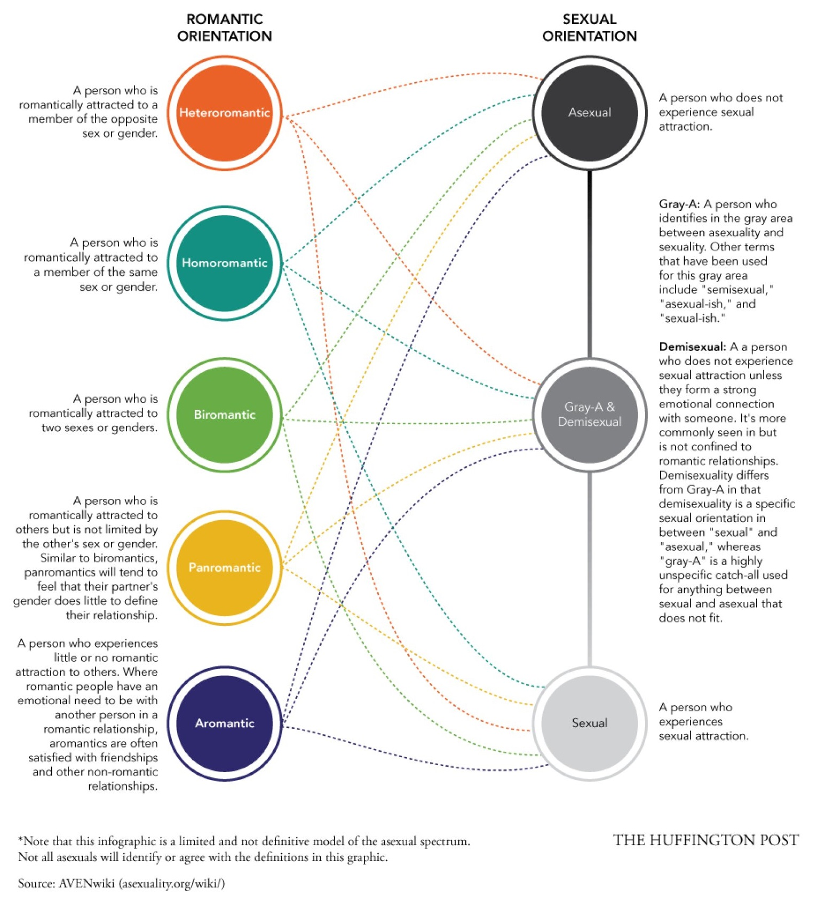

Asexual Spectrum
The whole concept of sexuality has now come to be understood as a spectrum where one end constitutes those who identify as sexual and the other as asexual. It only requires a hint of common logic to arrive at the conclusion that if people who are highly sexual or what is known as hyper sexual exist, then surely the exact opposite of that must exist too. However, the spectrum is not limited to the extremes and people who often find themselves in between fall within the Gray area. The following diagram is an attempt to illustrate this spectrum. We assure you that this is not the entire spectrum and only an example of how the spectrum works!
A common mistake made by people is to mix up Romantic orientations with Sexual orientations. While for most sexual people the two go hand in hand, it does not mean that one cannot go without the other. The above illustration shows that you could be anywhere on the romantic spectrum irrespective of whether you are Asexual, Sexual or somewhere in between.
These are a few different identities from within the Asexual Community and we hope that it will help you figure out where you stand:
- Demi-sexual:When you experience sexual attraction only after forming an emotional bond with the other person.
- Cupiosexual:When you want a sexual relationship but do not experience sexual attraction.
- Grayasexual:When you experience sexual attraction very rarely or under specific circumstances.
- Lithosexual:When you experience sexual attraction but don’t want it to be reciprocated.
- Allosexual:When you experience sexual attraction in a manner that is considered to be the norm. it is the opposite of asexual.
- Demiromantic:When you develop romantic attraction to someone only after forming a strong emotional bond with them.
- Grayromantic: When you normally do not experience romantic attraction but may experience it sometimes under rare or specific circumstances.
- Androgynoromantic:When you are romantically attracted to androgynous people, irrespective of their gender.
- Androromantic:When you are romantically attracted masculine people, regardless of their gender..
- Gyneromantic:When you experience romantic attraction towards feminine people, regardless of their gender.
- Hetero-romantic:When you are romantically attracted to the gender opposite to oneself.
- Homo-romantic:When you are romantically attracted to the same gender as oneself.
- Bi-romantic:When you are romantically attracted to two genders.
- Pan-romantic:When you are romantically attracted to all the genders.
- Libidoist Asexual:When you have an active sex drive but it does not manifest in the form of sexual attraction to other people. It must be noted that asexuality is the lack of sexual attraction and not low sex drive.
- Non-Libidoist Asexual:When along with a lack of sexual attraction you have a low sex drive.
- Queerplatonic relationships:A relationship that is not quite romantic, but involves an intense emotional connection beyond what most people would consider a normal friendship. The term comes from the idea of “queering” relationships or redefining relationships and perceptions about them. Though the term is primarily used in the asexual and aromantic community, anyone of any orientation can have a queerplatonic partner.
- Sex-Ambivalent Asexual:When you have mixed feelings about sex or things related to it.
- Sex Neutral Asexual:When you have feelings toward sex that are neither positive nor negative. This adjective is sometimes used as an alternative for “sex-positive” because many members of the asexual community do not feel that the sex-positivity movement makes room for them or their experiences.
- Sex Positive Asexual:When you believe that consensual sexual activities are healthy and pleasurable and encourage sexual pleasure and experimentation.
- Sex repulsed Asexual:When you consider sex and anything related to it to be extremely distasteful and disgusting.
- Squishes:When you have a strong, platonic relationship with someone. Squishes are also known as aromantic crushes.
- Zucchini:Slang for “queerplatonic partner.” The use started as an Internet meme in the asexual community after a discussion about the lack of words available for talking about relationships that are not quite romantic, but not quite platonic.
You need not fit exactly into a single category and may experience two or more categories as a combination. You may experience something not in this list as well, to which you might not have words to describe and that is completely okay too. The point that we as an Asexual community are trying to make is that relationships are all about experiencing human connection. While some express this connection sexually and romantically, others might simply want to express it only romantically or non-romantically. Just because some people do not express this connection sexually, it doesn’t mean they are incapable of loving or being loved. We can give love, we can receive love, we can have crushes, we can be intimate, we have emotions, we express emotions. We simply do it on our own terms!
If you are still struggling to understand certain terms and need more clarity on asexuality, visit our FAQ page. You can also visit AVEN which is the original and best resource on asexuality. You are also welcome to write to us or send in your queries. To do that Contact Us.